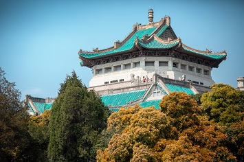
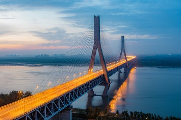
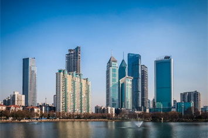

<!doctype html>
<html>

	<head>
		<meta charset="utf-8">
		<meta http-equiv="Content-Type" content="text/html; charset=UTF-8">
		<meta http-equiv="X-UA-Compatible" content="IE=8">
		<meta http-equiv="Expires" content="0">
		<meta http-equiv="Pragma" content="no-cache">
		<meta http-equiv="Cache-control" content="no-cache">
		<meta http-equiv="Cache" content="no-cache">
		<!--<title>待确定</title>-->
		<style>
		.tablePic{
				text-align: center;
			}
		</style>
	</head>

	<body>
		<!--<p style="text-align: center;">TO BE DETERMINED</p>-->
		<!--
		<p>
            Conference hotel details will be updated in about 1 month before the conference<br />
            <br />
            Wuhan is the capital of Hubei province, Peoples Republic of China. It lies at the east of the Jianghan Plain, and is the intersection of the middle reaches of the Yangtze river and Han river. Arising out of the conglomeration of three cities, Wuchang, Hankou, and Hanyang, Wuhan is known as the nine provinces leading thoroughfare. Wuhan is an important industrial base in China with a strong industrial system. Now they are vigorously developing the modern manufacturing industry and upgrading of industrial technology. It focuses on the development of produce iron and steel, automobile and machinery, electronic information, tobacco, petroleum chemical industry, environmental protection and food, home appliances, medicine, paper making and packaging industry those ten leading industrial in domestic China. The local government also use industrial policy to introduce these companies develop into a zone that focus developed steel, chemical and environmental protection industry zone, automobile and electromechanical industry zone, and electronics and bio-accumulation of pharmaceutical industry zone. Optical Valley of China is committed to building an innovation and Entrepreneurship center with global influence. More and more famous companies from all over the world set up their offices and workshops in Wuhan. Wuhan is a very popular tourist city which attracts all over the world people to come. The first station you will not miss Tower of Yellow Crane which has a long history and culture. The cherry blossoms of Wuhan University and East Lake in the spring attract the interest of countless tourists.<br /><br />
		</p>
		<div class="tablePic">
               
               <br />
               
               
           </div>
		   
		   <div class="tablePic">
<video controls width="720">

    <source src="https://pan.hbucn.tk/images/wuhan.mp4" type="video/mp4">

</video>
</div>
-->
	</body>

</html>
